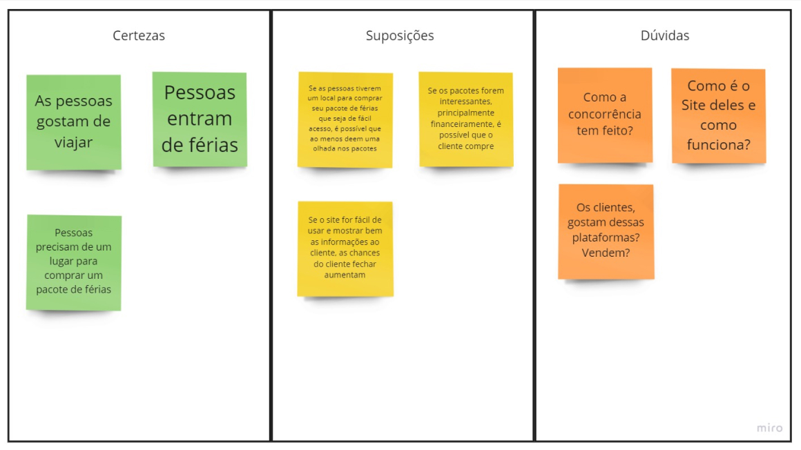
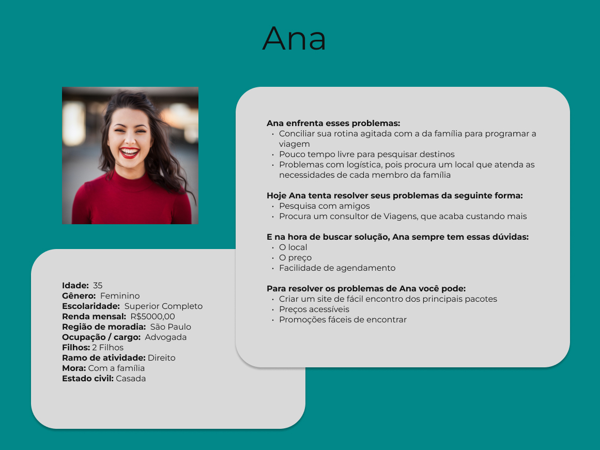

Caravan
Dê uma olhada no Protótipo
Dê uma olhada no em HTML pelo link: Site Caravan
O Projeto
É um projeto de um site de uma empresa viagem fictícia que precisa divulgar seus planos de viagem. A empresa quer construir um site do zero e já possui logo e documentação de comunicação visual.
O site foi construído com HTML, CSS, JavaScript e Bootstrap.
Método
O método de desenvolvimento usado foi o Design Thinking, sendo uma metodologia que permite a criação de soluções inovadoras e diferenciadas, aplicáveis. Para qualquer tipo de problema, desde questões empresariais até problemas sociais.
As etapas do Design Thinking são interconectadas e iterativas. O que significa que a equipe pode passar de uma fase para outra e voltar atrás se necessário. As cinco etapas do Design Thinking são Empatia, Definição do Problema, Ideação, Prototipagem e Teste.
Etapas e suas entregas
Empatia
A primeira fase do Design Thinking é a Empatia, que é o processo de entender o usuário e suas necessidades. Nesta fase, a equipe deve realizar pesquisas e entrevistas com usuários. Observar seus comportamentos e identificar suas necessidades, desejos e desafios. Esta fase é crucial para a compreensão do problema. E para a criação de soluções que atendam às necessidades reais do usuário.
Neste projeto será usado a Matriz CSD, para fazer levantamentos e fazer um plano de ação para os primeiros passos. Logo após os direcionamento decidido, será necessário fazer uma pesquisa e a criação de uma persona, pera reforçar quais são os problemas a serem resolvidos com este aplicativo.
Definição do problema
Após a fase de Empatia, a equipe deve definir o problema a ser resolvido. Nesta fase, a equipe deve analisar todas as informações coletadas durante a fase de Empatia. E identificar as necessidades e desejos mais importantes dos usuários. É importante definir o problema de forma clara e concisa, para que a equipe possa se concentrar na solução correta.
Ideação
A terceira fase do Design Thinking é a Ideação, que é o processo de gerar ideias para resolver o problema. Nesta fase, a equipe deve se concentrar em gerar uma grande quantidade de ideias. Sem se preocupar com a sua viabilidade ou implementação. O objetivo é criar um ambiente livre de julgamentos e incentivar a criatividade.
Prototipagem
O objetivo da fase de Prototipagem é testar as soluções para identificar possíveis problemas e refiná-las antes da implementação.
Algumas das técnicas utilizadas na fase de Prototipagem incluem a criação de protótipos de papel, que são representações simples da solução em papel. E a prototipagem rápida, que é uma técnica para criar protótipos de baixa fidelidade rapidamente
Protótipos de Baixa, Média e Alta fidelidade serão usados no desenvolvimento.
Teste
Processo de testar os protótipos com os usuários reais dentro do público alvo e obter feedback para aprimorar a solução.
Etapa 1 - Empatia
Início das Ideias
Para entender melhor as necessidades do cliente e quais caminhos tomar, foi usada a Matriz CSD, como ponto de partida
Com isso, pôde-se elaborar um plano de ação inicial.
Benchmark
Para entender melhor o que a concorrência estava fazendo, foi feito uma pesquisa de Benchmark e essa pesquisa, baseada em sites concorrentes, o Booking.com, Decolar e o CVC, nos mostrou alguns pontos em comum, que podem ser usados para o desenvolvimento do site.
Persona
Para o desenvolvimento do produto, foi criada uma persona, que ajudou ne melhor identificação do público alvo. É possível identificar vários públicos, de acordo com a pesquisa de benchmark e observando a concorrência.
Pelo estudo da concorrência, é possível ver que a maioria das pessoas que vão procurar esse tipo de site tem interesse em viajar, sendo desde mochileiros que querem dar uma volta pela Europa até uma família que está programando uma férias, sendo este público alvo dos 18 aos 60 anos.
Um bom exemplo é a persona desenvolvida abaixo.
Etapa 2 - Definições dos Problemas
Com base nas pesquisas de Benchmark e na análise de público alvo, foi identificado um problema.Este tipo de cliente costuma ter problema para pesquisar bons preços de viagens por falta de tempo.
Com a falta de tempo, normalmente, esse problema hoje é resolvido perguntando para amigos ou contratando um agente.
Isso nos mostra a que facilitando o encontro de pacotes, deixando-os bem visíveis, é possível ajudar esse público a fechar um pacote de viagens sem precisar de nenhuma ajuda externa.
Etapa 3 - Ideação
O desenvolvimento do Projeto
Fluxo
O site se organizou da seguinte maneira: a navegação das páginas se dá por meio de um menu, localizado no topo da página. a página inicial possui uma área que leva até os contatos. Mais abaixo na página de contato, tem uma área que leva até a inscrição no site. No banner, podem se localizar principais ofertas de viagens, para levar para a página de informações sobre a viagem. Em vantagens planos, a pessoa será levada até a página de escolha de plano. Selecionado o plano, será enviado para a inscrição no site.
Etapa 4 - Prototipagem
Foi criado um site para atender as necessidades do cliente, sendo desenvolvido, a partir da análise do Briefing do cliente, do estudo da concorrência e de um levantamento do público do cliente. A princípio, nos primeiros rascunhos, a página inicial teria um banner que iria de uma ponta a outra da página. Com o desenvolvimento, foi colocado um formulário de inscrição no mesmo espaço do banner, o levando a ocupar apenas metade do espaço que antes ele ocupava.
Protótipo de Baixa Fidelidade
Protótipo de Média Fidelidade
Cores e Tipografia
As cores foram escolhidas para combinar com o logotipo da empresa. Já a tipografia, foram escolhidas as Fonte Inter (com variações sem serifa, dependendo do sistema). A razão de escolha da Inter foi para combinar com o logo da empresa que foi criada com uma Roboto.
O Resultado

Etapa 5 - Teste
É possível testá-lo pelo links:
Dê uma olhada no Protótipo
Dê uma olhada no em HTML pelo link: Site Caravan
Conclusão
De acordo com as pesquisas, as pessoas que mais procurariam esse site são pessoas interessadas em viajar, podendo ter perfis distintos, sendo desde mochileiros que querem viajar pela Europa até famílias tentando programar suas férias.
O principal problema desses clientes é encontrar uma boa oferta de viagens, pois normalmente é um público que possui pouco tempo para a pesquisa, e esse problema é resolvido hoje perguntando para amigos ou contratando um agente.
Para facilitar a vida desses clientes, foi criado um site onde foi facilitando o encontro de pacotes, deixando-os bem visíveis, é possível ajudar esse público a fechar um pacote de viagens sem precisar de nenhuma ajuda externa, com cores visíveis e chamativas, mas sem tornar o site cansativo.